藍洞到底有多美? 讓我們繼續看下去....
為了把握最後待在卡布里島的時間，我們倆個大清早六點就在島上晃來晃去
清晨的卡布里真的只聽的到鳥叫聲，空氣超好忍不住大吸幾口！
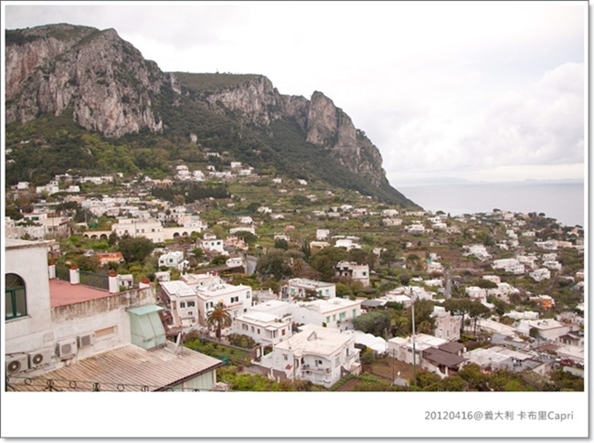
路上沒有什麼人，巷弄中只看到這種迷你的小貨車(?)在路上穿梭
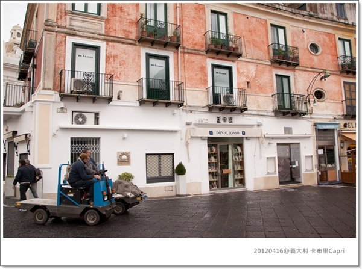
早起工作的大叔們(?)看到我們兩個阿呆觀光客都會很熱情的打招呼，蹦糾歐諾！
哦～所以島上除了鳥叫聲，還有我這大嗓門的哈囉聲，哈哈哈
大老遠就在那大叫，還好沒人從陽台上潑水下來！

晃完再回白貓吃早餐，種類不算太多(因為餓翻所以有的省略沒拍XD) 但都很好吃！
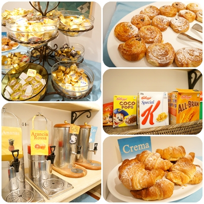
猛哥要我再次強調他是壯不是胖，哈哈哈！這人的身體真的是挺有厚度的！
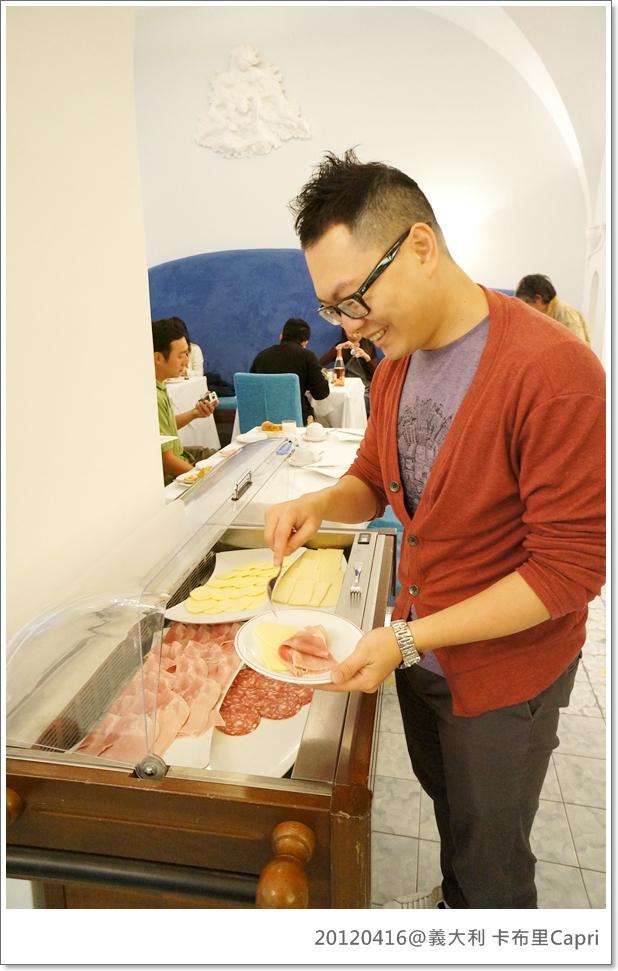
一早老丹就在聯絡船家確認今天藍洞開不開船，但要等到九點半才知未免也太折磨人了吧！
我們10:20就必需要離開卡布里，所以團友們大家一致決定直接殺下去碼頭等才不會浪費時間
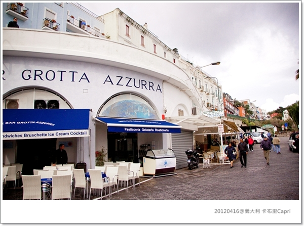
前一天因為風浪太大沒法進藍洞一探究竟，我這輩子只剩下今天的機會了 (老天爺!罷偷) >"<
下次再來義大利可能要老娘我梅開二度(?)了說 (大誤) XDDDDD

碼頭旁有TAXI在排班
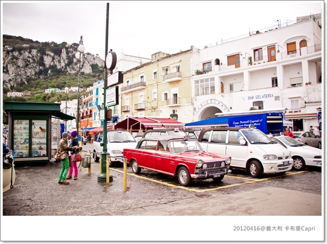
白中一點紅，好復古的車啊！
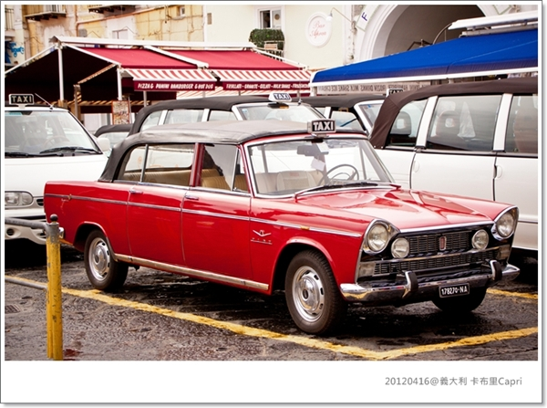
猛哥認真的到處拍拍把美景留在相機裡帶回家，老婆卻跟人跑惹(?)
哈哈哈～因為太想進藍洞了，所以硬跟著老丹去問船家狀況，當然不是我問，我只是想要知道第一手消息！
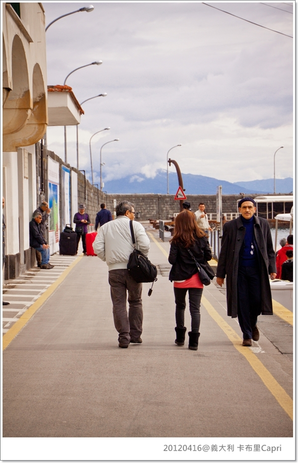
我這張還蠻像領隊的嘛！XD
看著我笑臉回來就知道我們今天可以進藍洞口啦！！！！
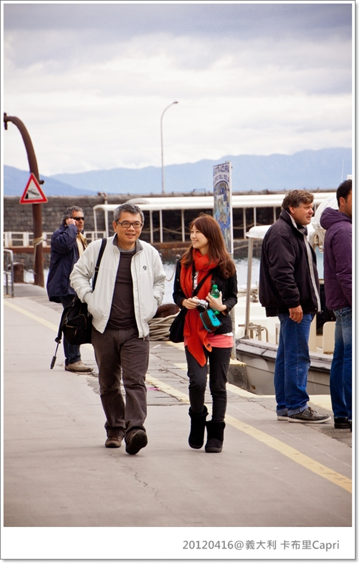
有我跟著插花，老丹不得不把我們送上船啦！哈哈哈
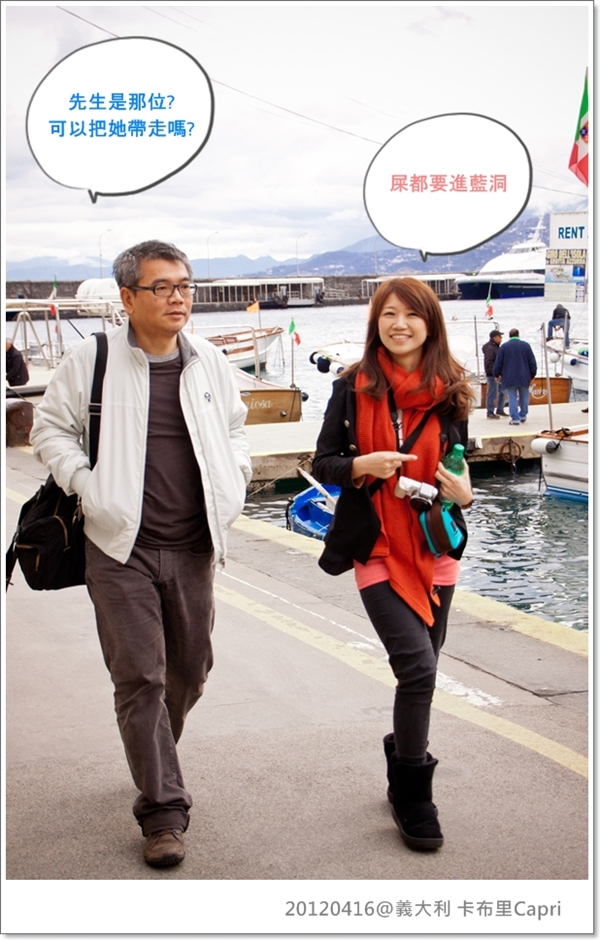
有人說藍洞裡的藍，就是「上帝調好的藍」。我覺得這形容超美，完全無法用想像，保持著神秘感
這個洞穴在1826年時，被兩名德國人發現的，但經後人研究得知，洞穴早於西元30年左右的羅馬時代就存在。
因為陽光穿過位於入口下方的海底洞口，進而折射在洞內的水面上，
由於海水會吸收紅光而使得只有藍光能通過海水，使得洞內的海水形成一股神秘的藍色。
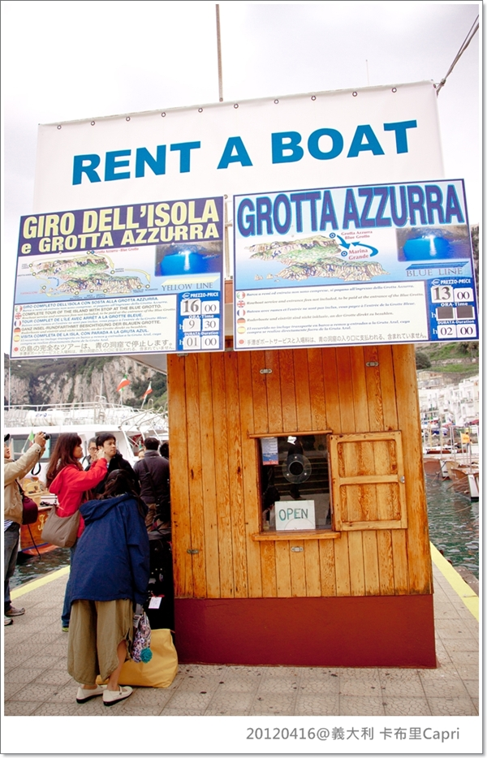
藍洞是個天然洞穴，入口僅 1米寬，長54米、 高15 米、水深22米，是卡布里島最熱門的觀光景點
而且只有運氣夠好的人，才能進入藍洞
如果風浪太大，要進入那若隱若現的藍洞口，應該會被岩石撞個頭個頭破血流吧！
如果遇到漲潮，水位過高，整個洞口會被海水淹沒，只能看到洞口的岩石無法進入！
只有一半的機率......MY GOD
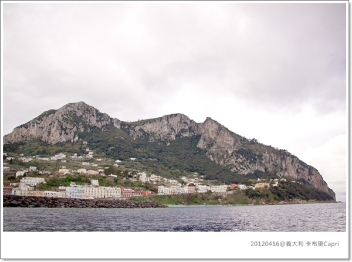
老丹不跟要留下幫大家看守著行李，而且他搞不好已經看到不想看了 (羨慕!!!)
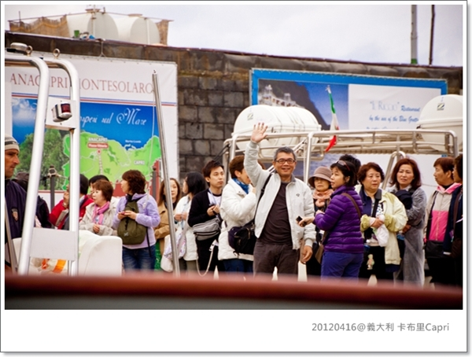
跟老丹掰掰後我們坐著小快艇出發了！
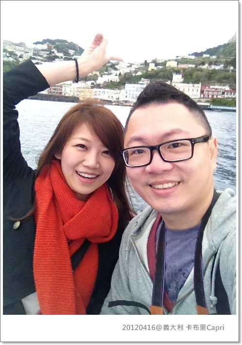
船長看我們一團沒家長帶出門的，人很耐斯的自動幫我們解說跟介紹週圍景色
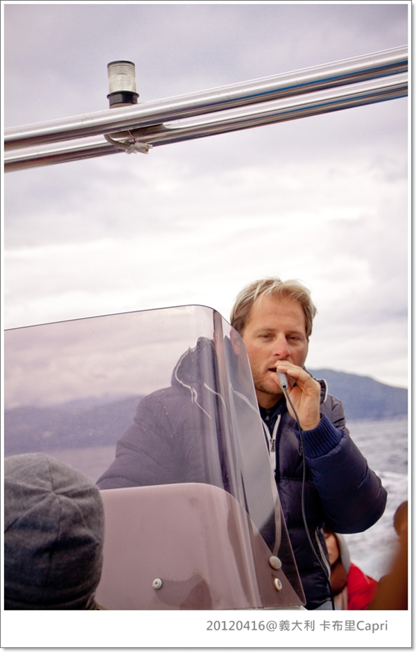
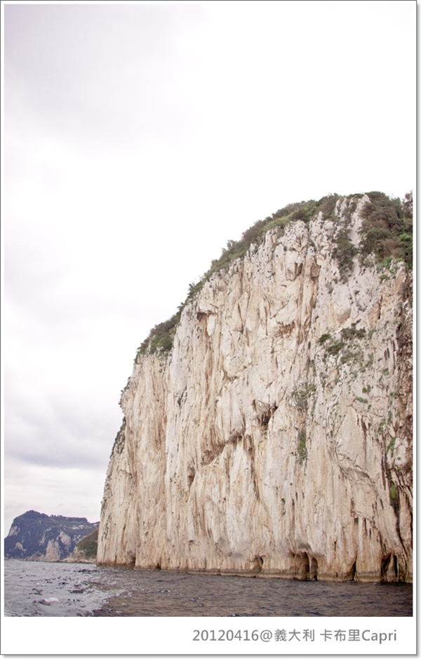
延途壯觀的景色
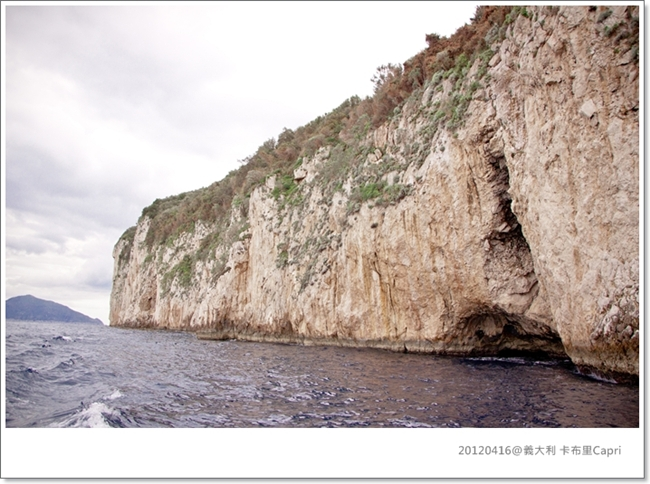
旅遊書上換搭小船的入口就在這兒，終於抵達我朝思慕想的藍洞口啦！！！！！！
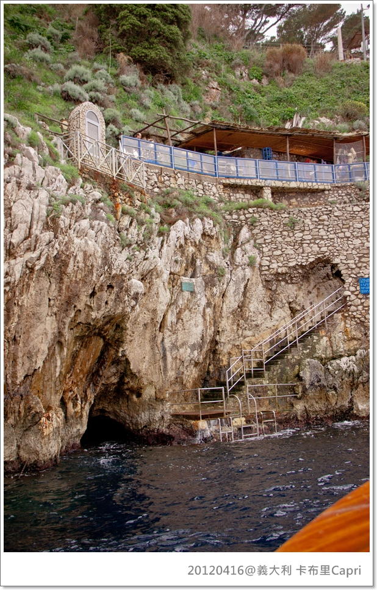
是的！各位捧油，就算今天風平浪靜，不能進藍洞的第二個因素我們也中獎了！
如照片所示，因為漲潮，洞口變得只有那～～～～～嘛小一個，所以我們就真的只到了藍洞口！
掯！！為什麼老娘我飛了16個小時只能到 藍洞口！藍洞口！藍洞口！
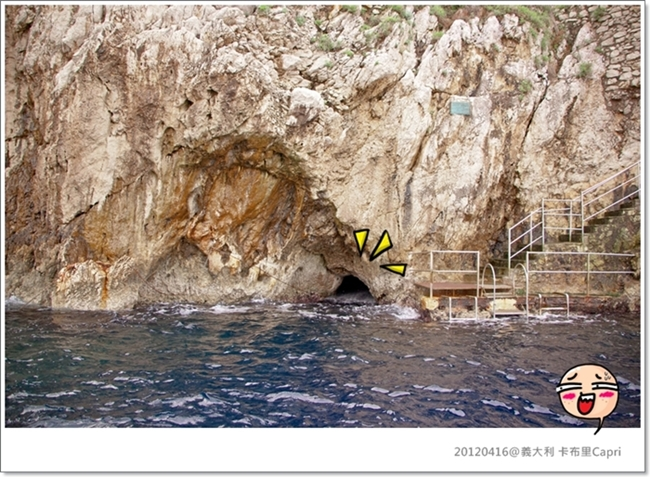
這個小洞就算載安全帽硬衝也只會腦震盪的被抬出來吧！ :D
正常的洞口露出海面大約有半個人高，進洞口的瞬間，全船的人要向後躺下，小船才能順利滑進藍洞。
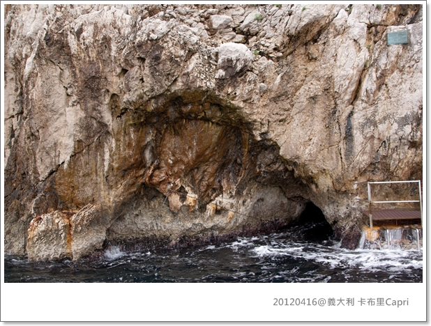
很遺憾，不能帶大家一起進入藍洞神秘世界，
但我拍了"五百張"藍洞口的照片與大家分享，哇哈哈哈哈哈哈哈
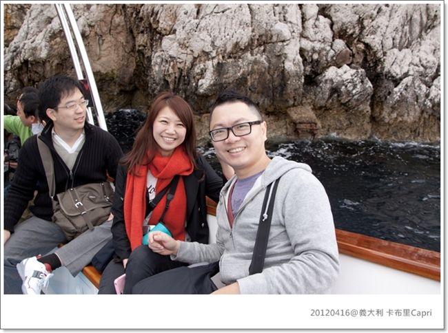
戰友們還是很開心的跟洞口拍照，拍心酸的(?) XD
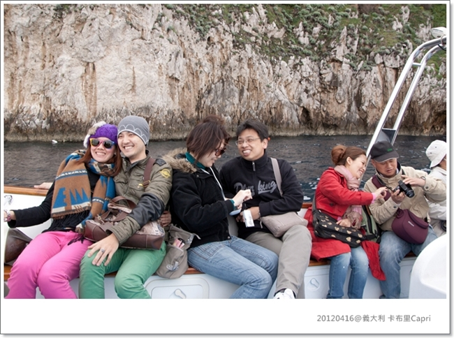
500張藍洞口連發開始！！！
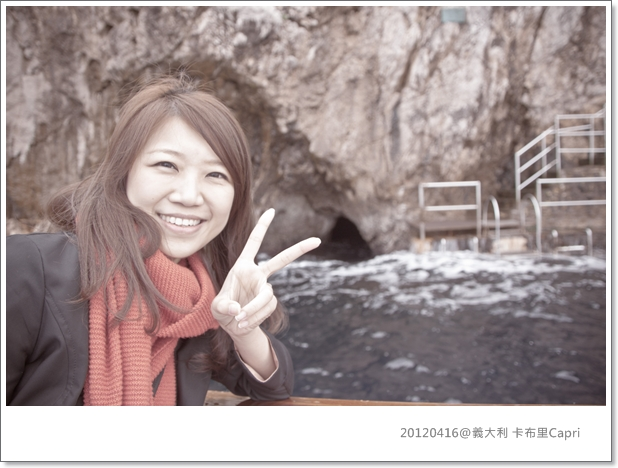
媽的！！郭猛哥
老娘都只能跟洞口拍照了，你他X的整顆頭居然還遮住我珍貴的藍洞口！！！是想氣屎我ㄇ？
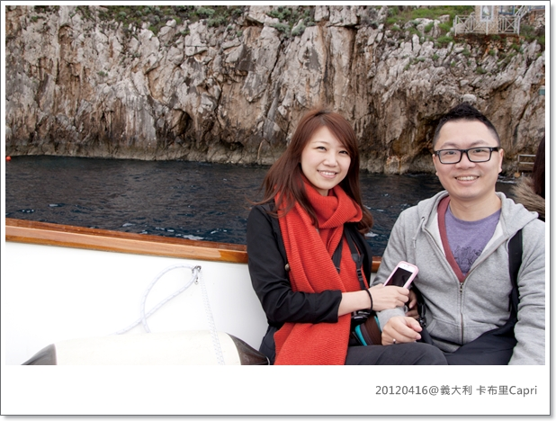
一般藍洞的船票是包在行程內了，就算你無法進入也不可能會退費
妙的是一般日本人的團就算不能進藍洞，他們還是會搭快艇到藍洞口晃一圈拍拍照，台灣團就沒有，為什麼？
這次是因為我跟著老丹去問船家時才知道，所以就請他跟船家安排
團友們也投票決定就到洞口晃一圈再離開卡布里，我強烈建議華友可以將進洞口參觀的行程安排進去啊！
飛那嘛遠不能進藍洞夠悲慘了，至少還有洞口可以拍回來"哭夭"一下啊是不是!? 哈哈哈哈
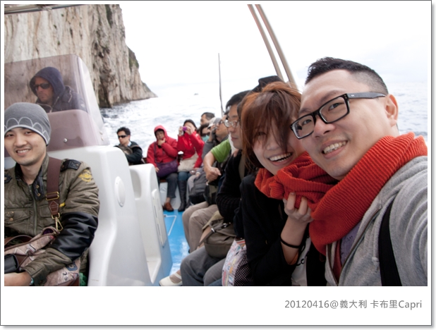
在藍洞口短暫的停留.....
大家都分享在洞裡的影片，應該沒有人分享洞口的影片吧！哼哼 獨家！！！
冷到瘋掉兩位人妻，包的跟阿桑一樣的打道回府！
溫度已經夠低了還吹海風，真心覺得我沒有破病真的是一大奇蹟惹說！哈哈
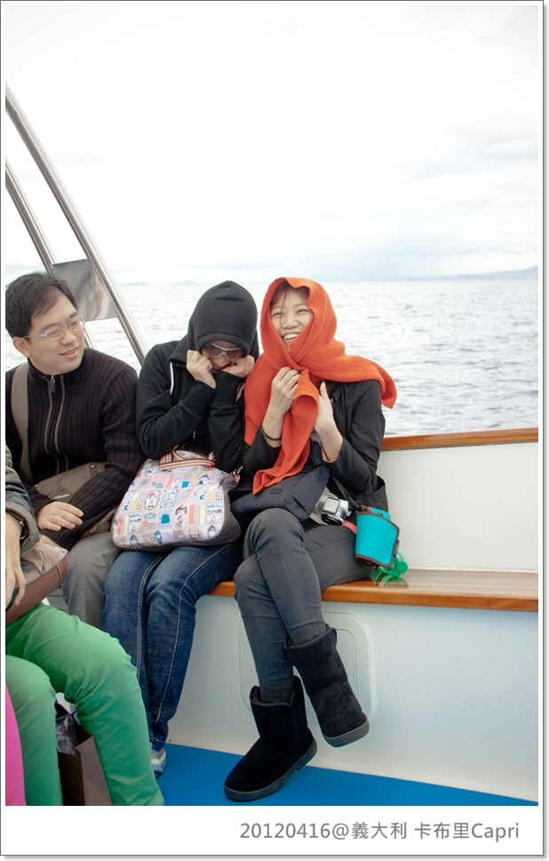
戴上墨鏡帥氣度爆增的船長合照一張！
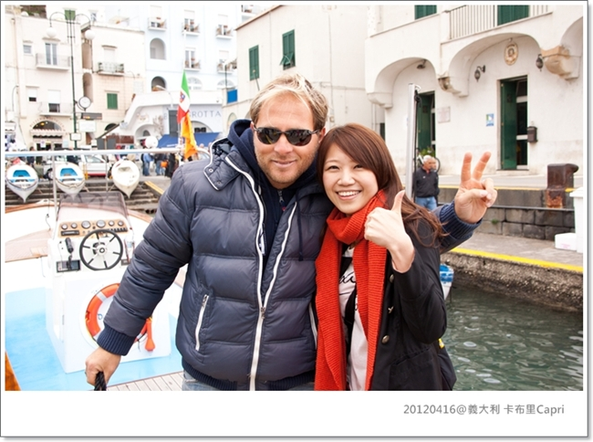
也剛好趕上離開卡布里島的船班前往下個景點--蘇連多
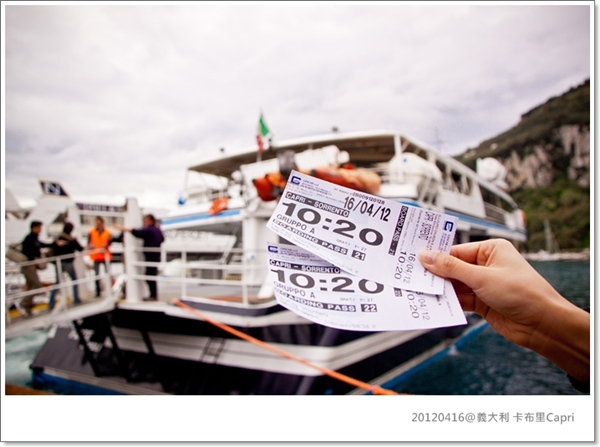
卡布麻!!!那個藍洞下次換你拍回來借我"ㄆㄧˇ ㄆㄤ"一下惹~~~~~~哭哭!!
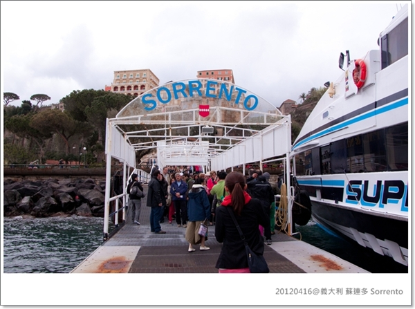
 歐洲冒險 MK義大利蜜月系列
歐洲冒險 MK義大利蜜月系列